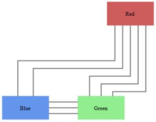

When a link is drawn between two nodes, by enabling the LineDistributingEnabled property of that link, and if any other line exists or is drawn in the nodes, the line will be automatically distributed from those nodes.

Figure 70: Line Distributing
Enable Line Distributing for Line Connectors
Line distributing for a line connector can be enabled using the LineDistributingEnabled property.
By default this property will be set to False.
|
Controller
LineConnector lc = new LineConnector(); lc.ConnectorType = ConnectorType.Orthogonal; lc.LineDistributingEnabled = true; |
The code sample above enables the line distributing feature.
 Note: Only
orthogonal connector type supports line distributing.
Note: Only
orthogonal connector type supports line distributing.